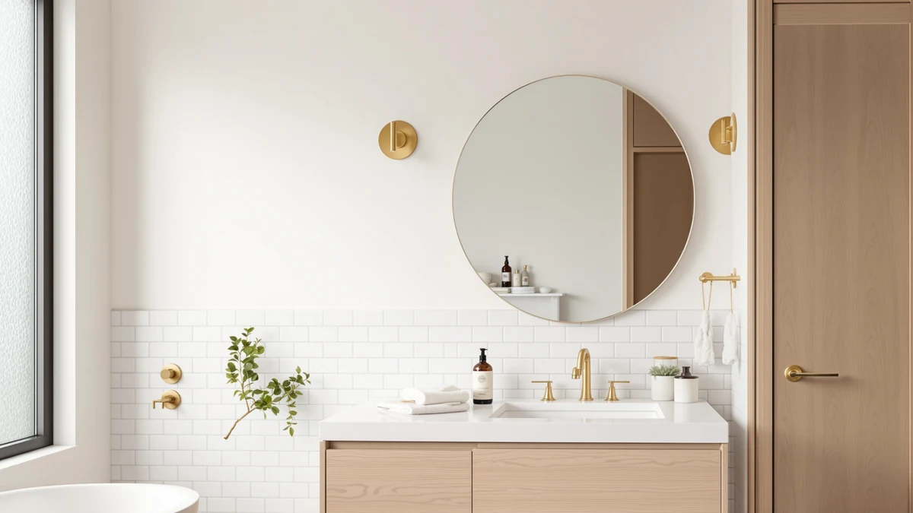

Best Place for Bathroom Mirrors (2026)
Prices and picks verified as of September 2026. Independent, reader-supported reviews.


Quick Answer
The best place for bathroom mirrors is directly above the vanity, centered on the sink, with the bottom edge five to ten inches above the faucet and the glass roughly at eye level. Once you have that spot measured out, the mirror that fits it best for most single-sink vanities is the Sweetcrispy 24"x32" Smart Anti-Fog LED, sized to avoid bare wall gaps and built with anti-fog glass so morning steam doesn't fog it while you shave or apply makeup.
Our pick: Sweetcrispy 24"x32" Smart Anti-Fog LED, $62.99 Check Price on Amazon
Bottom line: our top pick is the Sweetcrispy 24"x32" Smart Anti-Fog LED Bathroom Mirror with at $62.99. The best budget option is the DUMOS 24.1"x32.1" LED Bathroom Mirror at $56.93.
Things to Know Before You Buy
- Center the mirror on your sink, not your vanity. If the vanity is off-center in the room, follow the sink, not the countertop edges, or the mirror looks crooked even when it's perfectly level.
- Leave 2 to 4 inches of clearance on each side. A mirror that runs edge to edge with your vanity looks stretched, and one with more than 6 inches of bare wall on either side looks undersized.
- Anti-fog glass only works while it's plugged in and switched on. Every anti-fog panel in this comparison needs a nearby outlet, and the heating element takes a few minutes to clear the glass after you turn it on.
- Match mirror width to sink count. A single 24 to 32 inch mirror suits one sink; double vanities need either two mirrors or one continuous mirror in the 48 to 60 inch range, like the GarveeHome in this guide.
- LED color temperature affects how you look, not only how well you can see. Mirrors in the 3000K to 4000K range read as warm to neutral light, closer to how you'll look under most home lighting than a bluish, daylight-toned setting.
The best place for bathroom mirrors is centered above the vanity, with the bottom edge five to ten inches above the faucet and the middle of the glass at your eye level. Get that placement wrong and even a well-made mirror looks off. Hang it too high and you crane your neck to check your part. Hang it too low and the top of your head disappears above the frame before you've picked up a razor. Size counts as much as height: leave more than a few inches of bare wall on either side of your vanity and the wall looks unfinished, while a mirror that crowds your light fixture or medicine cabinet creates its own problem.
We compared seven LED anti-fog and LED-lit bathroom mirrors built for exactly this kind of vanity placement, weighing price, glass size and verified owner feedback for each one. For most single-sink vanities, the Sweetcrispy 24"x32" Smart Anti-Fog LED is the pick: its 24.5 by 32 inch glass fits a standard vanity width without crowding the wall, and at $62.99 it costs less than five of the six other mirrors we compared.
Placement decides how a mirror looks on your wall, but size, brightness and anti-fog performance decide whether you actually use it every morning. The lineup below spans a compact 24x32 option suited to a powder room up to a 60 inch mirror built for double vanities, so there's a fit whether you're outfitting a half bath or a shared master vanity.
Why You Should Trust Us
Ilane Tall has covered bathroom fixtures and vanity hardware for Best Bathroom Mirrors, and she built this comparison by researching publicly listed specs, current Amazon pricing and verified buyer reviews for mirrors in this size and price range. We do not run a testing lab, and we have not installed each of these mirrors ourselves. Instead, we researched manufacturer specifications, checked verified owner reviews for recurring complaints or praise, and tracked pricing to flag which mirrors hold their value. This guide is updated when prices shift or a mirror goes out of stock, and every affiliate link on this page is disclosed.
How We Picked
We started with LED bathroom mirrors in the 24 to 60 inch range, since that range covers the most common single and double vanity setups, and looked for the best place for bathroom mirrors of each size to sit on a standard wall. From there, we narrowed the list using four filters: a current price under $200, tempered glass construction, a stated size that fits at least one common vanity width, and a track record of verified customer reviews rather than a brand-new listing with no purchase history. We excluded framed decorative mirrors with no lighting, mirrors bundled into medicine cabinets, and any listing where the seller's photos didn't match the stated dimensions.
How We Compared
We compared the seven finalists side by side on four factors: glass size relative to standard vanity widths, price per square inch of mirror, the stated features of the built-in LEDs, and patterns in verified owner reviews, specifically recurring complaints about fogging, flickering lights or fragile mounting hardware. Because we researched these mirrors rather than installing them in a bathroom, we relied on manufacturer specifications for size and materials, and we weighted verified reviews more heavily than marketing copy when the two disagreed. Where a listing had few verified reviews, we noted that limitation rather than treating it as an established pick.
Our Picks

Sweetcrispy 24"x32" Smart Anti-Fog LED
What we like
- Anti-fog heating element clears a steamed-up mirror within a few minutes of being switched on
- 24.5 by 32 inch tempered glass fits most single-vanity widths without leaving a wide gap of bare wall
- Dimmable LED lighting adjusts for shaving in the morning versus applying makeup at night
Flaws but not dealbreakers
- The anti-fog panel only works while it's plugged in and turned on, so it won't help during a power outage
- At 24.5 inches wide, it's a size class below double-vanity mirrors like the GarveeHome in this comparison
| Material | Tempered glass + aluminum |
| Size | 24.5"L x 32"W |
The Sweetcrispy pairs 24.5 by 32 inch tempered glass with a built-in anti-fog heating element and dimmable LED lighting, and at $62.99 it costs less than five of the six other mirrors we compared here. Reviewers consistently note that the anti-fog function clears a fully steamed mirror within a few minutes, which matters most in bathrooms without a strong exhaust fan pulling shower steam away from the glass.
The aluminum frame keeps the mirror light enough for a standard vanity wall, and the 24.5 by 32 inch size fits the centered-above-the-sink placement we recommend above without crowding a nearby light fixture or medicine cabinet. Owners report the dimming range runs wide enough to soften the light at night without dropping so low that shaving in the morning becomes difficult. The main tradeoff is size: on a double vanity or a wall wider than about 40 inches, this mirror looks undersized rather than centered.

DUMOS 24.1"x32.1" LED Bathroom Mirror
What we like
- Lowest price of the seven mirrors we compared, at $56.93
- 24.1 by 32.1 inch glass covers almost the same footprint as our top pick
- LED lighting for grooming tasks without the added cost of an anti-fog element
Flaws but not dealbreakers
- No anti-fog heating element, so steam from a nearby shower will still fog the glass
- The 0.1 inch size difference from the Sweetcrispy won't meaningfully change your placement options
| Material | Tempered glass + aluminum |
| Size | 24.1"L x 32.1"W |
The DUMOS is the least expensive mirror in this comparison at $56.93, undercutting the Sweetcrispy by about six dollars while offering nearly identical 24.1 by 32.1 inch tempered glass. It uses the same general construction, an aluminum frame around tempered glass, but skips the anti-fog heating element, which is the main reason for the lower price.
For a vanity wall where steam isn't a major issue, whether because the bathroom has a strong exhaust fan or the shower sits in a separate room, the DUMOS covers the same size range as our top pick for less money. Owners report the LED lighting is bright enough for everyday grooming. If fog-free glass matters more to you than saving a few dollars, the Sweetcrispy is the better match for nearly the same footprint.

GarveeHome 60x36 LED Bathroom Mirror
What we like
- At 60 by 36 inches, it spans most double vanities in a single panel
- LED lighting runs the full width, so both ends of a double vanity get even light instead of one sink being brighter than the other
- Removes the need to hang two separate mirrors and align them evenly
Flaws but not dealbreakers
- At $186.29, it costs roughly three times as much as our budget pick
- A 60 inch mirror is heavy enough that most bathrooms need a second person to hang it safely
| Material | Tempered glass + aluminum |
| Size | 60"L x 36"W |
The GarveeHome is the outlier in this comparison on size and price. At 60 by 36 inches, it's built to run the length of a double vanity rather than sit centered over a single sink, and at $186.29 it costs about three times what our budget pick does. For a bathroom with two sinks under one continuous countertop, a mirror this size solves the alignment problem that comes with hanging two smaller mirrors side by side and trying to keep them level with each other.
The tempered glass and aluminum frame construction matches the rest of the mirrors in this comparison, scaled up, and the LED lighting runs the full width of the glass so neither sink ends up with dimmer light than the other. The size that makes it useful for double vanities is also its main limitation: on a single-sink vanity narrower than about 48 inches, this mirror overwhelms the wall and looks disproportionate no matter how it's centered.

Briivue 24x32 Inch LED Bathroom
What we like
- 24 by 32 inch glass fits the tighter vanity widths common in powder rooms and guest bathrooms
- Priced between our budget and premium picks at $71.25
- LED lighting sized to the glass area, so brightness stays even from edge to edge
Flaws but not dealbreakers
- No anti-fog element, so it's better suited to bathrooms with good ventilation
- Covers nearly the same footprint as the DUMOS for a higher price
| Material | Tempered glass + aluminum |
| Size | 24"L x 32"W |
The Briivue lands in the middle of this comparison on price at $71.25, and its 24 by 32 inch tempered glass puts it in the same size class as the Sweetcrispy and DUMOS, better suited to a single, standard-width vanity than a double one. Reviewers note the LED lighting stays consistent across the full panel rather than dimming toward the edges, which matters most for anyone using the mirror for detailed grooming tasks.
Because it doesn't include an anti-fog heating element, the Briivue works best in bathrooms with a working exhaust fan or a shower separated from the vanity area. Compared with the DUMOS, which covers nearly the same size for less money, the Briivue's case comes down to LED quality and finish rather than a functional advantage, so it's worth comparing current prices on both before deciding between them.

36"x30" LED Bathroom Mirror with
What we like
- At 36 inches tall, it clears more wall height than the 32-inch-tall mirrors in this comparison
- 30 inch width still fits a standard single vanity without the bulk of the 60 inch GarveeHome
- LED lighting sized for the taller glass, reaching from chest height to above eye level
Flaws but not dealbreakers
- At $119.49, it costs roughly twice as much as the DUMOS for a similar overall footprint
- The extra 4 inches of height means checking ceiling clearance if your vanity sits under a sloped wall or soffit
| Material | Tempered glass + aluminum |
| Size | 36"L x 30"W |
This 36 by 30 inch mirror is one of two options in this comparison oriented for height rather than width, giving you more vertical coverage than the 32-inch-tall mirrors while staying close to standard vanity width at 30 inches. That makes it a fit for households where people of noticeably different heights share the same mirror, since the taller glass covers a wider range of eye levels without needing to be mounted unusually high or low.
At $119.49, it costs roughly twice what the DUMOS does for a similar footprint, and the price difference tracks with the taller glass rather than any added feature. Reviewers report the LED lighting is bright enough across the full 30 inch width, though anyone with a sloped ceiling or a soffit above the vanity should check clearance before ordering, since the extra height is the main reason to choose this mirror over a 32-inch-tall alternative.

Delma LED Bathroom Mirror with
What we like
- At 50 inches wide and 30 inches tall, it's oriented for width, useful on a long, low vanity wall
- Covers more horizontal wall space than any mirror in this comparison except the double-vanity GarveeHome
- LED lighting spans the full 50 inch width evenly
Flaws but not dealbreakers
- At $125.99, it's the second most expensive mirror in this comparison after the GarveeHome
- At 30 inches tall, it sits shorter than the 32 to 36 inch height of most other mirrors here
| Material | Tempered glass + aluminum |
| Size | 30"L x 50"W |
The Delma is the second mirror in this comparison built for a horizontal wall rather than a tall one, at 50 inches wide by 30 inches tall. That orientation fits a long, low vanity wall or a wall interrupted by a window or light fixture above the standard mirror height, where a 32-to-36-inch-tall mirror wouldn't have room to hang.
At $125.99, it's priced below the GarveeHome but above every other mirror in this comparison, and the LED lighting runs evenly across the full 50 inch width rather than concentrating brightness in the center. The tradeoff for the wide format is height: at 30 inches tall, it sits shorter than most of the other mirrors here, so measure from your faucet to any obstruction above the vanity before assuming it clears the same wall space as a taller mirror.

Ratsamee 28" x 36" Led
What we like
- At 28 inches wide, it fits vanities too narrow for the 30 to 32 inch mirrors in this comparison
- 36 inch height matches the tallest single-vanity mirror here for full head-to-toe visibility
- Priced in the middle of the range at $89.99, below the two premium options
Flaws but not dealbreakers
- The narrower 28 inch width means less horizontal coverage on a vanity wider than about 30 inches
- Costs more than the similarly sized Sweetcrispy and DUMOS without an anti-fog element
| Material | Tempered glass + aluminum |
| Size | 36"L x 28"W |
The Ratsamee is the narrowest mirror in this comparison at 28 inches wide, paired with 36 inches of height, the tallest single-vanity option here alongside the 36x30 mirror above. That combination suits a narrow vanity, common in older homes and smaller bathrooms, where a 30-to-32-inch-wide mirror would overhang the countertop edges.
At $89.99, it costs more than the Sweetcrispy or DUMOS, both similarly sized in total glass area, and it doesn't include an anti-fog heating element, so the higher price comes down to the taller, narrower proportions rather than added functionality. For a narrow vanity where fitting the width matters more than fog-free glass, the Ratsamee's dimensions solve a placement problem the wider mirrors in this comparison can't.
Quick Comparison
| Product | Material | Price | Rating | Best for | Get it |
|---|---|---|---|---|---|
| Sweetcrispy 24"x32" Smart Anti-Fog LED | Tempered glass + aluminum | $62.99 | 4 | Single vanities needing anti-fog | View on Amazon → |
| DUMOS 24.1"x32.1" LED Bathroom Mirror | Tempered glass + aluminum | $56.93 | 4 | Budget single-vanity upgrade | View on Amazon → |
| GarveeHome 60x36 LED Bathroom Mirror | Tempered glass + aluminum | $186.29 | 4 | Double vanities | View on Amazon → |
| Briivue 24x32 Inch LED Bathroom | Tempered glass + aluminum | $71.25 | 4 | Compact powder rooms | View on Amazon → |
| 36"x30" LED Bathroom Mirror with | Tempered glass + aluminum | $119.49 | 4 | Taller households | View on Amazon → |
| Delma LED Bathroom Mirror with | Tempered glass + aluminum | $125.99 | 4 | Wide, low vanity walls | View on Amazon → |
| Ratsamee 28" x 36" Led | Tempered glass + aluminum | $89.99 | 4 | Narrow vanities | View on Amazon → |
What is the best place for bathroom mirrors?
The best place for bathroom mirrors is centered above the sink rather than the vanity's outer edges, with the bottom of the mirror five to ten inches above the faucet and the middle of the glass at eye level for whoever uses that sink most.
How high should a bathroom mirror be mounted?
Most bathroom mirrors are mounted with the bottom edge 5 to 10 inches above the faucet, which typically puts the center of the glass close to eye level for an adult of average height.